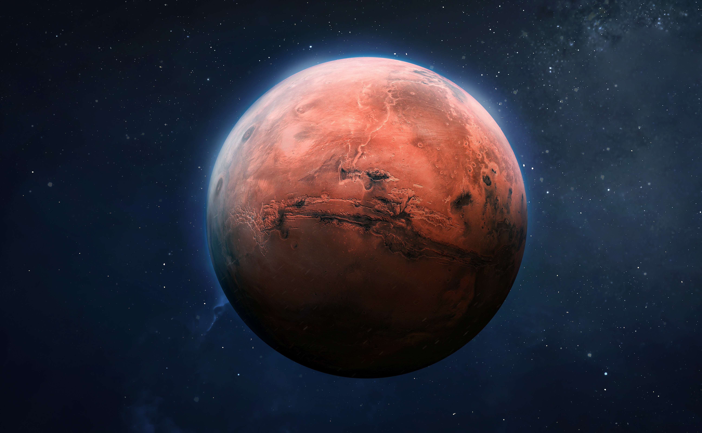

THE PICTURE OF THE DAY!
The Apollo 11: Catching the Mars
Mission Overview:
“Project Ares was launched with a singular goal: to capture high-resolution imagery of Mars’ hidden geological layers and uncover evidence of past water flows. The rover Aurora travelled 54.6 million kilometres across interplanetary space, enduring seven months of transit before entering Mars’ thin atmosphere. Its descent was perilous — a fiery plunge followed by the deployment of a supersonic parachute and retro-thrusters. At 02:37 UTC, Aurora’s wheels touched the Martian soil for the very first time.”
Add to Favourites
July 29,2021
Image credit & copyright - NASA